Turner et al. — 2023 · Alexander Matt Turner, Lisa Thiergart, Gavin Leech, David Udell, Juan J. Vazquez, Ulisse Mini, Monte MacDiarmid
| Priority | ○ P1 — Important |
| Section | F — Alignment, steering, and reasoning |
| Source | https://arxiv.org/abs/2308.10248v5 (arXiv:2308.10248v5) |
| Licence | CC BY 4.0 |
| Print anthology | pages 1453–1485 (cover 1453, text 1454–1485) |
Why read this. Shows that adding a single contrast-pair activation difference at inference time steers model outputs without any optimization.
Reading focus. Construction of steering vectors, layer and coefficient choices, sentiment/toxicity evaluations, and the effect on off-target capabilities.
In context. The minimal steering method — a single difference vector — that 30 generalizes and 32 applies to refusal. Compare with feature steering in 18 and single-neuron steering in 37.
Note. Latest arXiv version (v5) is retitled “Steering Language Models With Activation Engineering”; same paper and arXiv identifier.
← 30 Representation Engineering · Contents · 32 Refusal Is Mediated by a Single Direction →
Text extracted automatically from the source PDF. Display equations, figures and some tables appear as images; inline mathematics may be garbled — the PDF is authoritative.
Alexander Matt Turner Independent researcher alex@turntrout.com
Lisa Thiergart Gavin Leech MIRI University of Bristol g.leech@bristol.ac.uk
David Udell Juan J. Vazquez Independent researcher Arb Research
Ulisse Mini Monte MacDiarmid MATS Anthropic
Prompt engineering and finetuning aim to maximize language model performance on a given metric (like toxicity reduction). However, these methods do not fully elicit a model’s capabilities. To reduce this gap, we introduce activation engineering : the inference-time modification of activations in order to control (or steer ) model outputs. Specifically, we introduce the Activation Addition (ActAdd) technique, which contrasts the intermediate activations on prompt pairs (such as “Love” versus “Hate”) to compute a steering vector (Subramani et al., 2022). By tactically adding in e.g. the “Love” − “Hate” steering vector during the forward pass, we achieve SOTA on negative-to-positive sentiment shift and detoxification using models including LLaMA-3 and OPT. ActAdd yields inference-time control over high-level output properties (like topic and sentiment) while preserving performance on off-target tasks. ActAdd is lightweight: it does not require any machine optimization and works with a single pair of data points, which enables rapid iteration over steering. ActAdd demonstrates the power of activation engineering.
LLMs contain hidden capabilities we do not know how to fully elicit (Korinek, 2023). Naively prompting a model with a question does not maximize the probability of the correct response. Carefully consider how prompting a model to think “step-by-step” (Wei et al., 2022) massively improves performance on a range of benchmarks. Similarly, “few-shot” prompting a model with correct answers to unrelated in-distribution questions allows “in-context learning” for e.g. stronger performance on NLP tasks (Brown et al., 2020). Importantly, these interventions do not supply the LLM with extra task-relevant information or update the algorithm implemented by the LLM’s computational graph. Even though the model is initially able to score higher on these benchmarks, those capabilities do not emerge without a specific intervention. We therefore hypothesize the presence of an elicitation overhang : we do not know how to elicit all relevant abilities and information from frontier models.
Prompt engineering is the most obvious way to steer a model, but prompting has limited reliability (Ye & Durrett, 2022; Wang et al., 2024). Therefore, to reduce the elicitation overhang, we explore a new modality for steering language model outputs. By strategically perturbing activations during the forward pass, we hope to more reliably and effectively steer models compared to prompt engineering. We call this methodology activation engineering .
We suspect that compared to prompt engineering, activation engineering can elicit a wider range of model capabilities. Consider, for example, a model optimized to imitate the text outputs of eloquent poets and awkward mathematicians. The model may contain the internal mechanisms required to output text which is both eloquent and mathematical. However, if the model is an accurate estimator of the training distribution, it will (correctly) assign low probability to eloquent mathematical prose. Because nothing in the training data was both eloquent and mathematical, there may exist no prompt which elicits mathematical prose. In contrast, activation engineering might be able to simultaneously activate the circuitry for eloquent speech and for mathematical content.
To demonstrate the power of activation engineering, we introduce Activation Addition (ActAdd). Suppose we want to achieve negative-to-positive sentiment control (Li et al., 2018; Dathathri et al., 2020). To achieve this, ActAdd first compares the model’s activations on a contrast pair of prompts, such as the prompts “Love” and “Hate.” The otherwise-similar prompts differ along the target dimension of sentiment. ActAdd then computes the difference of these activations in order to compute steering vectors . These vectors act like “virtual bias terms” because ActAdd directly adds the steering vectors to the forward pass at inference time. By shifting the inference-time activations along the direction of the steering vector, ActAdd steers the model to generate positive sentiment completions (Table 1).
Table 1: The impact of ActAdd. The steering vectors are computed from (“Love” - “Hate”) and (“I talk about weddings constantly” - “I do not talk about weddings constantly”). Appendix Table 6 shows more examples.
| Prompt | + steering |
= completion |
|---|---|---|
| I hate you because... | [None] | ...you are the most disgusting thing I have ever seen. |
| ActAdd (love) |
...you are so beautiful and I want to be with you forever. | |
| I went up to my | [None] | ...“I’m sorry, I can’t help you.” “No,” he said. “You’re not.” |
| friend and said... | ActAdd (weddings) |
...“I’m going to talk about the wedding in this episode of Wedding Season. I think it’s a really good episode. It’s about how you’re supposed to talk about weddings.” |
Contributions. We unify past literature on related topics to introduce activation engineering . To better elicit the full capabilities of models, we introduce the ActAdd steering method, which achieves SOTA on toxicity reduction and sentiment control. We thoroughly test the steered models to verify the preservation of their general capabilities. We therefore show the promise of ActAdd as an effective and cheap method for steering LLM outputs.
Latent space arithmetic. Research in generative models for computer vision has long demonstrated the ability to steer image generation using derived vectors, including steering latent variables – most famously, shifting activations along a direction that corresponds to smiles in images (Larsen et al. 2016; White 2016). Similarly, in the text domain, classic results on the word2vec embedding show that arithmetic on word vectors can capture some parts of semantic reasoning (for instance, analogies: Mikolov et al. 2013b;a). Our work focuses on steering generative language models.
LLM steering. Many approaches attempt to affect the output of a pretrained LLM, whether:
Intervening on weights , as with supervised finetuning, RLHF, steerable layers, and weight editing (that is, targeted fine-tuning) (Ranzato et al. 2016; Ziegler et al. 2019; Dathathri et al. 2020; Meng et al. 2023; Ilharco et al. 2023). However, naive RLHF, finetuning, and weight editing have known side-effects on overall model performance (Hase et al. 2023; Qi et al. 2023; Brown et al. 2023);
Intervening at decoding , as with guided or trainable decoding (Gu et al. 2017; Grover et al. 2019; see Zhang et al. 2022a for an overview of controlled generation and Jin et al. 2022 for textual style transfer);
Intervening on the prompt , as with automated prompt engineering (Shin et al. 2020; Zhou et al. 2022);
Intervening on token embeddings , as with ‘soft prompting’ (Li & Liang 2021; Lester et al. 2021; Khashabi et al. 2022);
Intervening on activations , for instance by freezing the weights of the LLM and searching for a ‘steering vector’ of activations, e.g. using gradient descent (Subramani et al. 2022; Hernandez et al. 2023). These optimized extraction methods, which search for a steering vector, differ from extraction methods which directly compute it (present work and Li et al. 2023b). In our work, we do not use gradient descent or other optimization methods.
Table 2: Locating our work in the steering literature.
| Intervention vectors obtained via | Vector inte ... weights |
rvenes on model ... ... activations |
|---|---|---|
| Differences after fine-tuning | Ilharco 2023 | N/A |
| Per-query gradient-based search | Meng 2022, Orgad 2023 |
Dathathri 2020 Subramani 2022 Hernandez 2023 |
| Differences between prompt pairs | N/A |
ActAdd (present work), Li et al., 2023b |
Activation engineering. Activation engineering involves creating vectors of activations which cause desired changes to output text when added to the forward passes of a frozen LLM (Dathathri et al. 2020). Table 2 organizes prior work by intervention type.
An early antecedent is the Plug-and-Play Language Model of Dathathri et al. 2020. This uses a separate classifier (one classifier per attribute to steer towards) to perturb the model’s activations to generate text that accords more closely with the classifier’s target. Subramani et al. 2022 extract latent steering vectors from a frozen LLM, successfully discovering sentence-specific vectors which steer completions to near-perfect BLEU scores (i.e, control of the LLM’s generation) and unsupervised style transfer. However, the method requires running gradient descent for each new steering vector. Hernandez et al. 2023 locate and edit an LLM’s knowledge through learning an encoding of facts in its activation space. Ablating attention heads can also be seen as activation engineering, though the technique is mostly used for model interpretation rather than steering (Michel et al. 2019; Olsson et al. 2022).
Independently, Li et al. 2023b developed a similar method called ITI which computes steering vectors which are selectively applied according to trained linear probes. They use these probes to find attention heads with different activation distributions for true and false statements. They steer the model toward truthful outputs, where our experiments cover a range of goals. In addition, ITI adds the same steering vector at all sequence positions during inference and ITI requires dozens of samples. In contrast, ActAdd we add steering vectors to a subset of sequence positions and require as few as 2 samples. Similar work on ‘in-context vectors’ also followed ours (Liu et al. 2023). Lastly, Zou et al. 2023’s “representation engineering” also followed our work. They develop a range of techniques for deriving steering vectors and for steering models using activation-space edits and optimization. In comparison to Zou et al. 2023, we steer different models (LLaMA-3, OPT, GPT-2, and GPT-J) on different tasks (detoxification and sentiment control).
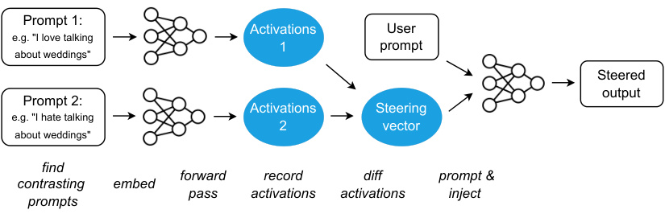
Prompt 1:
Activations User
e.g. "I love talking
1 prompt
about weddings"
Steered
output
Prompt 2:
Activations Steering
e.g. "I hate talking
2 vector
about weddings"
find
forward record diff prompt &
contrasting embed
pass activations activations inject
prompts
Figure 1: Schematic of the Activation Addition ( ActAdd ) method. = natural language text; • = vectors of activations just before a specified layer. In this example, the output is heavily biased towards discussing weddings, regardless of the topic of the user prompt. (See Algorithm 1 for the method’s parameters: intervention strength, intervention layer, and sequence alignment.)
We use decoder-only Transformer neural networks (Vaswani et al. 2017). The LLMs in this work contain a stack of Transformer layers, each consisting of multi-head attention (MHA) and a feedforward network (FFN). We focus on its “residual streams” (Elhage et al. 2021), the sequences ( x 0 , ..., x n ) of intermediate activation vectors processed by each layer. ActAdd manipulates the residual stream values hl input to layer l . Each layer performs MHA and FFN computations on x i , adding x i +1 to the stream. The final vector x n in the stream can then be decoded into the next-token prediction. At inference time, the residual stream is initialized h1 with the embedding of the tokenized prompt.
Activation addition. Our method takes a pair of natural-language prompts ( p + , p− ), where p + represents the property we wish output text to emphasise (e.g. love) and p− represents its opposite (e.g. hate or indifference). hl +is the activation vector for the promptp+at layerl.The difference hl +−h −_l_is a new activation vector which (intuitively) captures the difference between a prompt with the target property, and a prompt without it. The steering vector is computed before inference time.
Algorithm 1 ActAdd , optimization-free activation addition
Input : ( p + , p− ) = steering prompt pair, tokenized p∗ = user prompt l = target layer c = injection coefficient a = sequence position to align h A and h p∗ M = pretrained language model Output : S = steered output
( p′ +, p −′)←pad right same token len( p + , p− ) hl +←M .forward (p′ +).activations [l] hl −←M .forward (p′ −).activations [l] hl A←hl +−h −l hl ← M . forward ( p∗ ) . activations [ l ] S ← M . continue_forward ( c hl A+hl@a)
To obtain a steering vector, we perform a forward pass on each prompt, record the activations at the given location in each pass, take the difference hl +−h −l, and then finally rescale this difference in activations by an ‘injection coefficient’ c . To steer, we add the resulting activation vector to the input of layer l and allow the forward pass to continue, and so obtain our steered output.1 c represents the
1See Appendix C for implementation details.
intervention strength, since it multiplies the steering vector’s contribution to the residual stream.2 We perform hyperparameter tuning to select c and also the injection layer l . As expected from past work (Subramani et al. 2022; Mini et al. 2023), intervening at the middle layers is most effective.
Algorithm 1 and Figure 1 depict the resulting ActAdd method. In the appendix, Figure 6 illustrates a figurative example of steering a model with ActAdd if that model had one-dimensional residual streams (rather than e.g. GPT-2-XL’s 1600 dimensions). A runnable notebook can be found at tinyurl.com/actadd.
We test whether 1) steering vectors are effective at eliciting the desired behavioral shift, and 2) whether they preserve the general capabilities of the model. We run perplexity-based experiments on GPT-2-XL (1.5B parameters, Radford et al. 2019). We then run toxicity and sentiment experiments on OPT (Zhang et al. 2022b) and LLaMA-3 (Meta 2024).
A summary of all experiments can be found in Table 5.3
4.1 ACTADD INTUITIVELY MODIFIES NEXT-TOKEN PROBABILITIES
We consider the OpenWebText corpus (Peterson et al. 2018). Our running example is the “wedding” topic vector produced by setting p + = weddings, p− = ‘ ’, l = 16, c = 1.
For each document di ∈ D in OpenWebText (Peterson et al. 2018), we first calculate the frequency of wedding-related words.4 If a document contains one of these words, the document is considered wedding-related. We randomly sample 300k documents, half of which are wedding-related.
We split the documents into sentences and measure GPT-2-XL’s perplexity on both the wedding-related and wedding-unrelated sentences. If the model is effectively steered to generate wedding-related text, it should assign that text higher probability (and thus achieve lower perplexity). For more details, see Appendix C.1.
Figure 2 shows the ActAdd perplexity relative to the unmodified model. In sentences where the injected topic (weddings) is more relevant, ActAdd’s perplexity is lower and predictive performance increases.
Figure 2: The perplexity ratio compares the relative predictive performance of ActAdd and an unmodified model. Lower is better. Adding the wedding steering vector improves performance on wedding-related text while preserving performance on unrelated text.
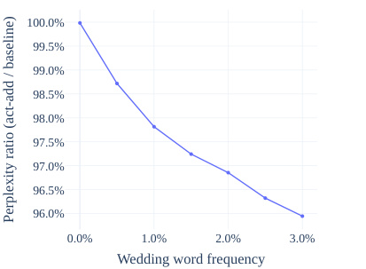
100.0%
99.5%
99.0%
98.5%
98.0%
97.5%
97.0%
96.5%
96.0%
0.0% 1.0% 2.0% 3.0%
Wedding word frequency
Perplexity ratio (act-add / baseline)
To test if the intervention is affecting relevant tokens or reducing perplexity in some spurious way, we observe the shift in the distribution of token log probabilities. We do this by randomly sampling 500 documents from the above OpenWebText sample and recording the log-probabilities assigned by the baseline and steered models. This results in a dataset of about 500k tokens, of which 29k are unique. We then group by token, filter for tokens with > 20 instances in the dataset, and calculate the mean perplexity difference between the ActAdd and baseline models. By displaying these as a Q-Q plot (Gnanadesikan & Wilk 1968), we can inspect outlier shifts in token probability.
2It’s typical for the intervention strength c to have a magnitude less than 15.
3Code repository for our experiments: https://zenodo.org/records/13879423.
4wedding, weddings, wed, marry, married, marriage, bride, groom, and honeymoon.
Appendix Figure 8 shows the resulting mean log-probability difference distribution. We see that is approximately normal for the bulk of the tokens but with clearly heavy tails. The positive tail is significantly heavier than the negative tail, suggesting that one set of tokens are reliably increased in probability, with a smaller set of tokens reliably decreased to a lesser extent. Outlier tokens can be found in Appendix Table 11. The probabilities most increased on average are primarily wedding-related. The bottom tokens share no obvious theme and show a significantly lower absolute change in probability.
At what layer are steering vectors most effective? Sweeping over GPT-2-XL injection layers for the wedding vector, we measure the average count of wedding-related words given a steering vector injected at each layer.
The intervention is already effective at the very first layer, rises in effectiveness until layer 6, and then declines. For the optimal injection site, we see > 90% success in topic steering (compared to a ∼ 2% baseline). Figure 3 shows the results of the layer sweep.
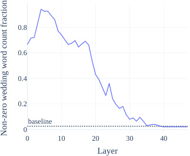
0.8
0.6
0.4
0.2
baseline
0
0 10 20 30 40
Layer
Non-zero wedding word count fraction
Method. Steering vectors can elicit generations 0 10 20 30 40 on a range of topics – not just weddings. Starting Layer from a generic prompt, we use GPT-3.5 to score whether the generations are about a target topic. Figure 3: P(steered completion contains weddingSpecifically, we generate 100 completions for related words) as a function of injection layer. the unmodified model and 100 for each target single-token ActAdd intervention (each token is about a different topic). Compared to the baseline generations, we record how much more frequently the steered model discusses the target topic.
Figure 3: P(steered completion contains weddingrelated words) as a function of injection layer.
Results. Figure 4 records a large boost in relevance (5-20%) on all topics at injection coefficient c = 2 (with the exception of “art”).
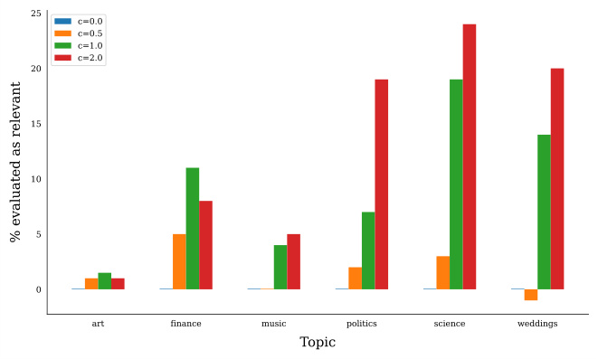
Figure 4: GPT-3.5-scored relevance of ActAdd completions on a range of generic topics.
Method. We benchmark toxicity reduction by generating steered continuations from RealToxicityPrompts (Gehman et al., 2020). Following Pei et al. 2023 we use a random subset n = 1 , 000. We repeat this sampling 5 times to obtain p -values ( t -test against SOTA), bolding rows which are better with p < 0 . 05. For each continuation, we use the Perspective API to score toxicity.
Results. To establish a common scale, we reused the baselines and PREADD results from Pei et al. 2023, adding Air-Decoding Zhong et al. 2023 and FUDGE Yang & Klein 2021. This yields 6 baselines to compare ActAdd against. (We also considered Gu et al. 2022 (which reported 0.043 toxicity), but we could not reproduce the results; also, their disfluency (54.6) is too high for practical use.) We compare to ActAdd using OPT (Zhang et al. 2022b) and LLaMA-3 (Meta 2024).5
As shown in Table 3, ActAdd-OPT has 8% lower toxicity than the second-best, PREADD-D-OPT, and ActAdd-LLaMA-3 gives a 5% drop over LLaMA-3 with a very small fluency penalty.
Table 3: Results on RealToxicityPrompts (random n=1000). The OPT used is 6.7B parameters, LLaMA-3-8B. Bold is p < 0 . 05 against second-best. Gray text denotes numbers reported by Pei et al. 2023 (PREADD), Yang & Klein 2021 (FUDGE), or Zhong et al. 2023 (Air-Decoding). More recent models are less toxic by default. However, ActAdd-OPT is the least toxic of the OPT interventions and even outperforms an unsteered LLaMA-3.
| Control Type | Method | Model | Toxicity↓ | (Dis)Fluency↓ | Relevance↑ |
|---|---|---|---|---|---|
| Unsteered Prompting |
baseline baseline |
OPT OPT |
.134 .200 |
8.9 54.3 |
.369 .294 |
| Steering vector | ActAdd | OPT | .112 | 13.8 | .329 |
| Controlled gen. | FUDGE | GPT-2-M | .128 | 22.1 | .329 |
| Contrast. decoding | PREADD-S | OPT | .134 | 51.7 | .290 |
| Contrast. decoding | PREADD-D | OPT | .122 | 56.6 | .326 |
| Gradient-guidedgen. | Air-Decoding | GPT-2-L | .185 | 48.3 | - |
| Unsteered | baseline | LLaMA3 | .114 | 6.3 | .391 |
| Steering vector | ActAdd | LLaMA3 | .108 | 6.7 | .365 |
Method. To evaluate sentiment, we use the Stanford IMDb dataset (Maas et al., 2011). Our goal is for the model to continue each review but with the opposite sentiment. We compute the proportion of generated outputs with the desired sentiment, as classified by a model finetuned on sentiment data, SiEBERT (Hartmann et al. 2023). For quality controls, we follow the conventional use of conditional perplexity to mark (dis)fluency, obtained using GPT-3 davinci-002 logprobs. We use cosine similarity between the prompt and continuation sentence embeddings to gauge the relevance of text in [0 , 1]. We evaluate sentiment changes from positive to negative and vice versa on a random subset of n = 1 , 000 and repeat to obtain p -values.
Results. Table 4 shows that our method is competitive on a conventional measure of sentiment control (Maas et al. 2011). We obtain state of the art success at steering from negative to positive sentiment. While. The only method which outperforms ActAdd in the positive to negative direction incurs a large penalty to fluency (68.4 vs 24.2, when matching methods on the same pretrained model) and relevance.
Method. We use ConceptNet from the LAMA benchmark, a general knowledge dataset (Petroni et al. 2019, n = 29 , 774 sentences, see Appendix Table 10). The model is given a prompt and then has to predict a factual completion. The task is intended for both causal and masked models, so some examples are difficult for causal-attention models (like GPT-2) due to the extremely limited context.
5We do not compare against finetuning because we wish to consider lighter-weight interventions which require minimal gradient updates.
Table 4: Results on IMDb sentiment. “Steering” denotes the probability of changing sentiment classification (called “success” in the baselines’ papers). Bold results represent p < 0 . 05 compared to the second-best. Gray text denotes numbers reported by Pei et al. 2023. Underline denotes best steered result. Fluency is worse under all steering methods; 1.5x to 3x worse for ActAdd, 7x worse for PREADD.
| positive to nega | tive | nega | tive to pos | itive | ||
|---|---|---|---|---|---|---|
| Method | Steering↑ | Disfluency↓ | Relevance↑ | Steer. ↑ | Disflu. ↓ | Rel. ↑ |
| ActAdd-OPT | 0.432 | 24.2 | 0.387 | 0.564 | 20.95 | 0.363 |
| ActAdd-LLaMA3 | 0.268 | 8.6 | 0.354 | 0.669 | 15.2 | 0.275 |
| OPT-Baseline | 0.175 | 8.95 | 0.430 | 0.445 | 9.38 | 0.423 |
| LLaMA3-Baseline | 0.138 | 5.8 | 0.437 | 0.417 | 6.09 | 0.426 |
| OPT-Prompt | 0.307 | 53.5 | 0.298 | 0.365 | 50.9 | 0.287 |
| FUDGE | 0.532 | 25.1 | 0.311 | 0.551 | 22.7 | 0.320 |
| PREADD-S-OPT | 0.631 | 68.4 | 0.253 | 0.624 | 67.1 | 0.258 |
For each sentence, we run the model on its prompt with and without the wedding activation addition. P @ K is the probability that the expected label is among the model’s top- K predicted tokens, conditioned on the prompt. We score the baseline and modified models by calculating mean P @ K values for a range of K . Finally we plot these for both modified and unmodified models over a range of K values.
Results. Figure 5 shows that on the ConceptNet benchmark of factual questions, our method has a negligible impact on off-target answer probabilities.
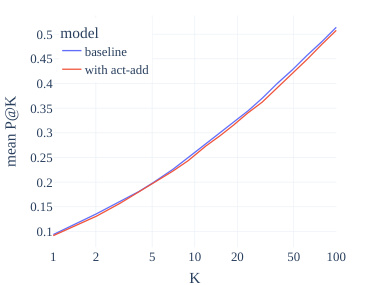
0.5 model
baseline
0.45
with act-add
0.4
0.35
0.3
0.25
0.2
0.15
0.1
1 2 5 10 20 50 100
K
mean P@K
Figure 5: Testing side effects ofActAdd with the ConceptNet benchmark (Petroni et al. 2019). ‘ P @ K ’ is the probability of the correct answer being in the model’s top K answers. Our method has a negligible impact on off-target probabilities across a range of top- K values.
Algebraic combination of forward passes ActAdd can be viewed as composition of separate forward passes. For example, we compose h +, h − and h∗ to produce steered output. We were surprised that forward passes can “compose” in this way, despite the model not being trained to allow this operation. The composability of forward passes is itself evidence for compositional representations (Olah 2023), independent of the evidence from task-composition arithmetic on weights (Ilharco et al. 2023).
Limitations To steer the model using an ActAdd vector, the user supplies the injection coefficient c and the intervention layer l . So far we have had success with fixing the sequence alignment a = 1. Overall, these free hyperparameters make ActAdd less user-friendly than simple prompt engineering. Thankfully, the user does not have to perform a fresh hyperparameter sweep for each use case; in
practice, intervention hyperparameters are stable. We include examples of failed steering vectors in Appendix Table 7. We also have not examined ActAdd’s potential impact on reasoning. ActAdd is not immediately applicable given only API access to a model. The model must both cache and expose intermediate activations at the given layer (Bloom & Nanda 2022). Currently, APIs generally do not allow for this.
Activation engineering vs finetuning Finetuning is better understood and more flexible – we doubt that activation engineering can e.g. teach a model a new skill. However, finetuning is significantly more costly and may not be able to elicit the same kinds of capabilities which activation engineering can elicit.
The first advantage of ActAdd is efficiency: the method requires no backward passes and can thus run on any machine that can perform inference rather than training. Implementation effort is also greatly reduced; only forward passes are required to find a suitable ( p + , p− ) and minimal labelled data is required - just the steering prompt pair. We discovered most of the example contrast pairs in Appendix Table 6 in minutes. All things considered, even nontechnical users can benefit from rapid feedback and relatively easy iteration
Activation engineering vs prompt engineering Activation additions can be continuously weighted, while prompts are discrete – a token is either present, or not. To more intensely steer the model to generate wedding-related text, our method does not require any edit to the prompt, but instead just increasing the injection coefficient. See Appendix B for suggestive experiments on ActAdd vs prompting. Unlike system prompts, activation additions do not take up token space in the model’s context window, although this is a small benefit in the era of multi-million token context windows. While prompting is more flexible and even cheaper than ActAdd, activation additions may elicit capabilities which prompting cannot (as evidenced by our superior results over prompting; see also the speculation in Section 1).
Interpretability of LLMs In most programs, adding values to imprecisely targeted intermediate memory locations would not yield sensible results. Why expect this from Transformers? A growing consensus is that the activation space of an LLM contains directions which represent high-level latents causally involved in what is generated (Burns et al. 2022; Moschella et al. 2023; Li et al. 2023a; Nanda 2023; Li et al. 2023b).
Our hypothesis, following Elhage et al. 2022, is more specific: that neural networks represent features of the input as directions in activation space, that is, with a linear representation (Park et al. 2023). Moreover, the direction in activation space that corresponds to (say) a love-hate latent variable stays approximately the same across a broad class of inputs.
Alain & Bengio 2018 use linear probes on residual streams to infer that LLM representations are at least partially linear; if a linear probe can predict some feature of text output from the residuals with high accuracy, this forms evidence that the feature is represented linearly (i.e. as a simple direction) (Nanda 2023).
The success of activation addition gives stronger, experimental evidence of feature linearity, demonstrating that models use feature-related information. Consider the central Love - Hate vector example: we add it to the forward pass and so increase love-related completions. On the examined prompts, this direction is responsible for steering the rest of the model towards love-related completions. In general, steering vectors establish causality , at least in the limited set of contexts examined.
Value alignment of LLMs Activation engineering is a promising way to control LLMs. Successor methods may be able to provide general steering methods (e.g. through some analogue of a Be helpful vector). Alongside contemporaneous work (Li et al. 2023b; Liu et al. 2023), our experiments suggest that activation engineering can flexibly retarget LLM behavior without damaging general performance. We speculate that ActAdd changes the model’s currently active mixture of goals and priorities. Suitably developed, the activation engineering approach could enable safety progress while preserving overall capabilities
While methods like prompt engineering, controlled decoding, and finetuning have benefits, they fail to elicit full capabilities from language models. To more reliably elicit these abilities, activation engineering strategically perturbs activations at inference time. In particular, we introduced Activation Addition to steer models by shifting their inference-time activations along a certain direction (like the “Love”-“Hate” vector). ActAdd is lightweight and effective, achieving SOTA on toxicity reduction and sentiment shift while retaining overall model capabilities. ActAdd demonstrates the promise of activation engineering. We look forward to future work realizing this promise.
Our code is available here: https://zenodo.org/records/13879423. The following is an exhaustive list of models used, sampling strategies used, and searches run:
Data processing To curate a wedding-related subset of OpenWebText, we retained documents with wedding-related words (see Section 4.1.1). The only pre-processing performed is to remove sequences of null characters. Each document is split into sentences sj ∈ di using the Punkt tokenizer (Strunk 2013).
Models After observing success with GPT-2-XL, to replicate our results, we subsequently repeated the same experiments with Llama-1-13B (Touvron et al. 2023) and GPT-J-6B (Wang & Komatsuzaki 2021). Our toxicity and sentiment experiments use OPT (Zhang et al. 2022b) and LLaMA-3-8B Meta 2024. See Appendix E for details. We use all-MiniLM-L6-v2 (Reimers & Gurevych 2019) to compute sentence embeddings to calculate relevance using cosine similarity. For the success score, we use the SiEBERT (Hartmann et al. 2023) sentiment classifier. We perform sentiment classificaton with the SiEBERT classifier (Hartmann et al., 2023).
APIs For scoring toxicity, we use https://www.perspectiveapi.com/. For scoring fluency, we use OpenAI davinci-002. The PREADD baseline instead used the discontinued davinci-001 model.
Seed We ran all generations on seed 0. After collecting all other data, we validated that our qualitative results transfer to seeds 1 and 2.
Sampling hyperparameters We precommitted to fixed sampling hyperparameters, selected before experiments began. We held them fixed throughout our data collection. Those sampling hyperparameters were temperature= 1 . 0, freq_penalty= 1 . 0, and top_p=0 . 3. Since this top_p value seemed a bit unusual to us in retrospect, we invited an external researcher to reproduce this process with an unmodified GPT-2-XL and report the best sampling hyperparameters they found. This second experiment was blinded, as they did not know the values we used. They found that temperature= 0 . 6 and top_p= 0 . 5 produced better GPT-2-XL capabilities. We reran all our qualitative results at this setting, and they all reproduced (subjectively, more impressively).
We use the same sampling hyperparameters for the toxicity and sentiment experiments. Numbers reported by the other authors were obtained with freq_penalty= 0 . 0, and top_p=1 . 0.
In replicating the unsteered OPT sentiment baseline, we find that the NegToPos direction is consistently higher success than PosToNeg. This holds across different combinations of model hyperparameters, including those in Pei et al. 2023. However, PREADD Pei et al., 2023 reports similar success results for both (i.e. a much lower NegToPos success). The OPT results use our calculated values.
Reporting the best of K completions We generated K = 3 completions for each qualitative demonstration, for both normal and steered forward-passes. Appendix Table 6, shows the subjectively most compelling completion pair out of the first three seed-0 completion-pairs. You can see all top-3 completions for the entries in this notebook: tinyurl.com/actadd3. We share activation additions which work well. We iterated over contrast pairs to get these to work, although several striking results were generated within [first author’s] first hour of using the technique. Out of the 12 activation additions we thought demonstrated a distinct ability of the method, we decided not to include 1 because its first three seed-0 completions were unusually unimpressive. We include the remaining 11 in Table 6.
ActAdd hyperparameters ( l, c ) This section does not have complete statistics . We perform simple grid search, usually between c ∈ [3 , 20] and l ∈ [6 , 24].
Hardware: GPU: Nvidia RTX A5000, CPU: Intel Core i9-10900X CPU @ 3.70GHz. 24GB GPU RAM, 32GB system RAM
Relevant libraries and frameworks: Operating system: Ubuntu 22.04.1 LTS, numpy: 1.24.3, pandas: 2.0.1, torch: 1.13.1, transformer-lens: 1.4.0.
Turner: conceptualization, team management, implementation of core features, design of many experiments, discovery of many individual steering vectors, and wrote much of the original post.
Thiergart: had idea for variations on positions of addition, implemented the positional experiment, worked on theory.
Leech: designed new experiments, designed figures, formalized the algorithm and evaluations, wrote the main text based on the earlier post, literature review.
MacDiarmid: most of the main library code.
Udell: wrote and edited the original post, generated qualitative results.
Mini: infrastructure support, OpenAI wrappers, experiments on LLaMA, Vicuna and GPT-J.
Vazquez: wrote part of text, conducted toxicity, sentiment control, and other experiments on LLaMA3, OPT, GPT-2.
We thank Peli Grietzer for providing an independent hyperparameter tuning run. We thank Alex Cloud, Jan Brauner, Andis Draguns, Sören Mindermann and Raymond Douglas for helpful comments on the draft, as well as Andrew Critch, Aryan Bhatt, Chris Olah, Ian McKenzie, janus, Julian Schulz, Justis Mills, Lawrence Chan, Leo Gao, Neel Nanda, Oliver Habryka, Olivia Jimenez, Paul Christiano, Peter Barnett, Quintin Pope, Tamera Lanham, Thomas Kwa, and Tristan Hume for comments on an earlier draft. We thank Rusheb Shah for engineering assistance. We thank Garrett Baker for running tests on GPT-J (6B) We thank an anonymous ICML reviewer for their extremely thoughtful comments.
Guillaume Alain and Yoshua Bengio. Understanding intermediate layers using linear classifier probes, 2018.
Joseph Bloom and Neel Nanda. TransformerLens: A library for mechanistic interpretability of generative language models. https://neelnanda-io.github.io/TransformerLens/, 2022.
Davis Brown, Charles Godfrey, Cody Nizinski, Jonathan Tu, and Henry Kvinge. Robustness of edited neural networks, 2023.
Tom B. Brown, Benjamin Mann, Nick Ryder, Melanie Subbiah, Jared Kaplan, Prafulla Dhariwal, Arvind Neelakantan, Pranav Shyam, Girish Sastry, Amanda Askell, Sandhini Agarwal, Ariel Herbert-Voss, Gretchen Krueger, Tom Henighan, Rewon Child, Aditya Ramesh, Daniel M. Ziegler, Jeffrey Wu, Clemens Winter, Christopher Hesse, Mark Chen, Eric Sigler, Mateusz Litwin, Scott Gray, Benjamin Chess, Jack Clark, Christopher Berner, Sam McCandlish, Alec Radford, Ilya Sutskever, and Dario Amodei. Language models are few-shot learners, 2020.
Collin Burns, Haotian Ye, Dan Klein, and Jacob Steinhardt. Discovering latent knowledge in language models without supervision, 2022.
Sumanth Dathathri, Andrea Madotto, Janice Lan, Jane Hung, Eric Frank, Piero Molino, Jason Yosinski, and Rosanne Liu. Plug and play language models: A simple approach to controlled text generation, 2020.
Nelson Elhage, Neel Nanda, Catherine Olsson, Tom Henighan, Nicholas Joseph, Ben Mann, Amanda Askell, Yuntao Bai, Anna Chen, Tom Conerly, et al. A mathematical framework for transformer circuits. Transformer Circuits Thread , 1, 2021.
Nelson Elhage, Tristan Hume, Catherine Olsson, Nicholas Schiefer, Tom Henighan, Shauna Kravec, Zac Hatfield-Dodds, Robert Lasenby, Dawn Drain, Carol Chen, Roger Grosse, Sam McCandlish, Jared Kaplan, Dario Amodei, Martin Wattenberg, and Christopher Olah. Toy models of superposition, 2022.
Samuel Gehman, Suchin Gururangan, Maarten Sap, Yejin Choi, and Noah A Smith. Realtoxicityprompts: Evaluating neural toxic degeneration in language models. arXiv preprint arXiv:2009.11462 , 2020.
Ramanathan Gnanadesikan and Martin B Wilk. Probability plotting methods for the analysis of data. Biometrika , 55(1):1–17, 1968.
Aditya Grover, Jiaming Song, Alekh Agarwal, Kenneth Tran, Ashish Kapoor, Eric Horvitz, and Stefano Ermon. Bias correction of learned generative models using likelihood-free importance weighting, 2019.
Jiatao Gu, Kyunghyun Cho, and Victor O.K. Li. Trainable greedy decoding for neural machine translation. In Proceedings of the 2017 Conference on Empirical Methods in Natural Language Processing , pp. 1968–1978, Copenhagen, Denmark, September 2017. Association for Computational Linguistics. doi: 10.18653/v1/D17-1210. URL https://aclanthology.org/D17-1210.
Yuxuan Gu, Xiaocheng Feng, Sicheng Ma, Lingyuan Zhang, Heng Gong, Weihong Zhong, and Bing Qin. Controllable text generation via probability density estimation in the latent space. arXiv preprint arXiv:2212.08307 , 2022.
Jochen Hartmann, Mark Heitmann, Christian Siebert, and Christina Schamp. More than a feeling: Accuracy and application of sentiment analysis. International Journal of Research in Marketing , 40(1): 75–87, 2023. ISSN 0167-8116. doi: https://doi.org/10.1016/j.ijresmar.2022.05.005. URL https: //www.sciencedirect.com/science/article/pii/S0167811622000477.
Peter Hase, Mohit Bansal, Been Kim, and Asma Ghandeharioun. Does localization inform editing? surprising differences in causality-based localization vs. knowledge editing in language models, 2023.
Evan Hernandez, Belinda Z. Li, and Jacob Andreas. Inspecting and editing knowledge representations in language models, 2023.
Gabriel Ilharco, Marco Tulio Ribeiro, Mitchell Wortsman, Suchin Gururangan, Ludwig Schmidt, Hannaneh Hajishirzi, and Ali Farhadi. Editing models with task arithmetic, 2023.
Di Jin, Zhijing Jin, Zhiting Hu, Olga Vechtomova, and Rada Mihalcea. Deep learning for text style transfer: A survey. Computational Linguistics , 48(1):155–205, March 2022. doi: 10.1162/coli_a_ 00426. URL https://aclanthology.org/2022.cl-1.6.
Daniel Khashabi, Xinxi Lyu, Sewon Min, Lianhui Qin, Kyle Richardson, Sean Welleck, Hannaneh Hajishirzi, Tushar Khot, Ashish Sabharwal, Sameer Singh, and Yejin Choi. Prompt waywardness: The curious case of discretized interpretation of continuous prompts. In Proceedings of the 2022 Conference of the North American Chapter of the Association for Computational Linguistics: Human Language Technologies , pp. 3631–3643, Seattle, United States, July 2022. Association for Computational Linguistics. doi: 10.18653/v1/2022.naacl-main.266. URL https://aclanthology.org/2022.naacl-main.266.
Anton Korinek. Language models and cognitive automation for economic research. Technical report, National Bureau of Economic Research, 2023.
Anders Boesen Lindbo Larsen, Søren Kaae Sønderby, Hugo Larochelle, and Ole Winther. Autoencoding beyond pixels using a learned similarity metric, 2016.
Brian Lester, Rami Al-Rfou, and Noah Constant. The power of scale for parameter-efficient prompt tuning, 2021.
Juncen Li, Robin Jia, He He, and Percy Liang. Delete, retrieve, generate: A simple approach to sentiment and style transfer, 2018. URL https://arxiv.org/abs/1804.06437.
Kenneth Li, Aspen K. Hopkins, David Bau, Fernanda Viégas, Hanspeter Pfister, and Martin Wattenberg. Emergent world representations: Exploring a sequence model trained on a synthetic task, 2023a.
Kenneth Li, Oam Patel, Fernanda Viégas, Hanspeter Pfister, and Martin Wattenberg. Inference-time intervention: Eliciting truthful answers from a language model, 2023b.
Xiang Lisa Li and Percy Liang. Prefix-Tuning: Optimizing continuous prompts for generation, 2021.
Sheng Liu, Lei Xing, and James Zou. In-context Vectors: Making in context learning more effective and controllable through latent space steering, 2023.
Kaifeng Lyu, Haoyu Zhao, Xinran Gu, Dingli Yu, Anirudh Goyal, and Sanjeev Arora. Keeping llms aligned after fine-tuning: The crucial role of prompt templates, 2024.
Andrew L. Maas, Raymond E. Daly, Peter T. Pham, Dan Huang, Andrew Y. Ng, and Christopher Potts. Learning word vectors for sentiment analysis. In Proceedings of the 49th Annual Meeting of the Association for Computational Linguistics: Human Language Technologies , pp. 142–150, Portland, Oregon, USA, June 2011. Association for Computational Linguistics. URL http: //www.aclweb.org/anthology/P11-1015.
Kevin Meng, David Bau, Alex Andonian, and Yonatan Belinkov. Locating and editing factual associations in GPT, 2023.
Meta. Meta Llama 3. https://llama.meta.com/llama3, 2024.
Paul Michel, Omer Levy, and Graham Neubig. Are sixteen heads really better than one? In H. Wallach, H. Larochelle, A. Beygelzimer, F. d'Alché-Buc, E. Fox, and R. Garnett (eds.), Advances in Neural Information Processing Systems , volume 32. Curran Associates, Inc., 2019. URL https://proceedings.neurips.cc/paper_files/paper/2019/ file/2c601ad9d2ff9bc8b282670cdd54f69f-Paper.pdf.
Tomas Mikolov, Ilya Sutskever, Kai Chen, Greg S Corrado, and Jeff Dean. Distributed representations of words and phrases and their compositionality. In C.J. Burges, L. Bottou, M. Welling, Z. Ghahramani, and K.Q. Weinberger (eds.), Advances in Neural Information Processing Systems , volume 26. Curran Associates, Inc., 2013a. URL https://proceedings.neurips.cc/paper_ files/paper/2013/file/9aa42b31882ec039965f3c4923ce901b-Paper.pdf.
Tomáš Mikolov, Wen-tau Yih, and Geoffrey Zweig. Linguistic regularities in continuous space word representations. In Proceedings of the 2013 conference of the north american chapter of the association for computational linguistics: Human language technologies , pp. 746–751, 2013b.
Ulisse Mini, Peli Grietzer, Mrinank Sharma, Austin Meek, Monte MacDiarmid, and Alexander Matt Turner. Understanding and controlling a maze-solving policy network, 2023. URL https: //arxiv.org/abs/2310.08043.
Luca Moschella, Valentino Maiorca, Marco Fumero, Antonio Norelli, Francesco Locatello, and Emanuele Rodolà. Relative representations enable zero-shot latent space communication, 2023.
Neel Nanda. Actually, othello-gpt has a linear emergent world representation. neelnanda.io/mechanistic-interpretability/othello, 2023.
Christopher Olah. Distributed representations: Composition & superposition. https://transformercircuits.pub/2023/superposition-composition/index.html, 2023.
Catherine Olsson, Nelson Elhage, Neel Nanda, Nicholas Joseph, Nova DasSarma, Tom Henighan, Ben Mann, Amanda Askell, Yuntao Bai, Anna Chen, et al. In-context learning and induction heads. arXiv preprint arXiv:2209.11895 , 2022.
Kiho Park, Yo Joong Choe, and Victor Veitch. The linear representation hypothesis and the geometry of large language models. arXiv preprint arXiv:2311.03658 , 2023.
Jonathan Pei, Kevin Yang, and Dan Klein. PREADD: prefix-adaptive decoding for controlled text generation. arXiv preprint arXiv:2307.03214 , 2023.
Joshua Peterson, Stephan Meylan, and David Bourgin. Openwebtext. https://github.com/jcpeterson/openwebtext, 2018.
F. Petroni, T. Rocktäschel, A. H. Miller, P. Lewis, A. Bakhtin, Y. Wu, and S. Riedel. Language models as knowledge bases? In In: Proceedings of the 2019 Conference on Empirical Methods in Natural Language Processing (EMNLP), 2019 , 2019.
Xiangyu Qi, Yi Zeng, Tinghao Xie, Pin-Yu Chen, Ruoxi Jia, Prateek Mittal, and Peter Henderson. Fine-tuning aligned language models compromises safety, even when users do not intend to! arXiv preprint arXiv:2310.03693 , 2023.
Alec Radford, Jeffrey Wu, Rewon Child, David Luan, Dario Amodei, Ilya Sutskever, et al. Language models are unsupervised multitask learners. OpenAI blog , 1(8):9, 2019.
Marc’Aurelio Ranzato, Sumit Chopra, Michael Auli, and Wojciech Zaremba. Sequence level training with recurrent neural networks, 2016.
Nils Reimers and Iryna Gurevych. Sentence-bert: Sentence embeddings using siamese bert-networks. arXiv preprint arXiv:1908.10084 , 2019.
Taylor Shin, Yasaman Razeghi, Robert L. Logan IV, Eric Wallace, and Sameer Singh. AutoPrompt: Eliciting Knowledge from Language Models with Automatically Generated Prompts. In Proceedings of the 2020 Conference on Empirical Methods in Natural Language Processing (EMNLP) , pp. 4222–4235, Online, November 2020. Association for Computational Linguistics. doi: 10.18653/v1/ 2020.emnlp-main.346. URL https://aclanthology.org/2020.emnlp-main.346.
Aaron Sloman. The irrelevance of turing machines to artificial intelligence. In Matthias Scheutz (ed.), Computationalism: New Directions . MIT Press, 2002.
Jan Strunk. nltk.tokenize.punkt module. https://www.nltk.org/api/nltk.tokenize.punkt.html, 2013.
Nishant Subramani, Nivedita Suresh, and Matthew Peters. Extracting latent steering vectors from pretrained language models. In Findings of the Association for Computational Linguistics: ACL 2022 , pp. 566–581, Dublin, Ireland, May 2022. Association for Computational Linguistics. doi: 10.18653/v1/2022.findings-acl.48. URL https://aclanthology.org/2022. findings-acl.48.
Hugo Touvron, Thibaut Lavril, Gautier Izacard, Xavier Martinet, Marie-Anne Lachaux, Timothée Lacroix, Baptiste Rozière, Naman Goyal, Eric Hambro, Faisal Azhar, Aurelien Rodriguez, Armand Joulin, Edouard Grave, and Guillaume Lample. LLaMA: Open and efficient foundation language models, 2023.
Ashish Vaswani, Noam Shazeer, Niki Parmar, Jakob Uszkoreit, Llion Jones, Aidan N Gomez, Ł ukasz Kaiser, and Illia Polosukhin. Attention is all you need. In I. Guyon, U. Von Luxburg, S. Bengio, H. Wallach, R. Fergus, S. Vishwanathan, and R. Garnett (eds.), Advances in Neural Information Processing Systems , volume 30. Curran Associates, Inc., 2017. URL https://proceedings.neurips.cc/paper_files/paper/2017/ file/3f5ee243547dee91fbd053c1c4a845aa-Paper.pdf.
Ben Wang and Aran Komatsuzaki. GPT-J-6B: 6B jax-based transformer. https://github.com/kingoflolz/mesh-transformer-jax#gpt-j-6b, 2021.
Li Wang, Xi Chen, XiangWen Deng, Hao Wen, MingKe You, WeiZhi Liu, Qi Li, and Jian Li. Prompt engineering in consistency and reliability with the evidence-based guideline for llms. npj Digital Medicine , 7(1):41, 2024.
Jason Wei, Xuezhi Wang, Dale Schuurmans, Maarten Bosma, Fei Xia, Ed Chi, Quoc V Le, Denny Zhou, et al. Chain-of-thought prompting elicits reasoning in large language models. Advances in neural information processing systems , 35:24824–24837, 2022.
Tom White. Sampling generative networks, 2016.
Suhang Wu, Minlong Peng, Yue Chen, Jinsong Su, and Mingming Sun. Eva-KELLM: A new benchmark for evaluating knowledge editing of LLMs, 2023.
Kevin Yang and Dan Klein. FUDGE: Controlled text generation with future discriminators. In Kristina Toutanova, Anna Rumshisky, Luke Zettlemoyer, Dilek Hakkani-Tur, Iz Beltagy, Steven Bethard, Ryan Cotterell, Tanmoy Chakraborty, and Yichao Zhou (eds.), Proceedings of the 2021 Conference of the North American Chapter of the Association for Computational Linguistics: Human Language Technologies , pp. 3511–3535, Online, June 2021. Association for Computational Linguistics. doi: 10.18653/v1/2021.naacl-main.276. URL https://aclanthology.org/ 2021.naacl-main.276.
Xi Ye and Greg Durrett. The unreliability of explanations in few-shot prompting for textual reasoning. In S. Koyejo, S. Mohamed, A. Agarwal, D. Belgrave, K. Cho, and A. Oh (eds.), Advances in Neural Information Processing Systems , volume 35, pp. 30378–30392. Curran Associates, Inc., 2022. URL https://proceedings.neurips.cc/paper_files/paper/ 2022/file/c402501846f9fe03e2cac015b3f0e6b1-Paper-Conference.pdf.
Hanqing Zhang, Haolin Song, Shaoyu Li, Ming Zhou, and Dawei Song. A survey of controllable text generation using transformer-based pre-trained language models. arXiv preprint arXiv:2201.05337 , 2022a.
Ningyu Zhang, Yunzhi Yao, Bozhong Tian, Peng Wang, Shumin Deng, Mengru Wang, Zekun Xi, Shengyu Mao, Jintian Zhang, Yuansheng Ni, Siyuan Cheng, Ziwen Xu, Xin Xu, Jia-Chen Gu, Yong Jiang, Pengjun Xie, Fei Huang, Lei Liang, Zhiqiang Zhang, Xiaowei Zhu, Jun Zhou, and Huajun Chen. A comprehensive study of knowledge editing for large language models, 2024.
Susan Zhang, Stephen Roller, Naman Goyal, Mikel Artetxe, Moya Chen, Shuohui Chen, Christopher Dewan, Mona Diab, Xian Li, Xi Victoria Lin, Todor Mihaylov, Myle Ott, Sam Shleifer, Kurt Shuster, Daniel Simig, Punit Singh Koura, Anjali Sridhar, Tianlu Wang, and Luke Zettlemoyer. OPT: Open pre-trained transformer language models, 2022b.
Tianqi Zhong, Quan Wang, Jingxuan Han, Yongdong Zhang, and Zhendong Mao. Air-Decoding: Attribute distribution reconstruction for decoding-time controllable text generation. arXiv preprint arXiv:2310.14892 , 2023.
Yongchao Zhou, Andrei Ioan Muresanu, Ziwen Han, Keiran Paster, Silviu Pitis, Harris Chan, and Jimmy Ba. Steering large language models using APE. In NeurIPS ML Safety Workshop , 2022. URL https://openreview.net/forum?id=JjvNzMOiBEp.
Daniel M. Ziegler, Nisan Stiennon, Jeffrey Wu, Tom B. Brown, Alec Radford, Dario Amodei, Paul Christiano, and Geoffrey Irving. Fine-tuning language models from human preferences, 2019.
Andy Zou, Long Phan, Sarah Chen, James Campbell, Phillip Guo, Richard Ren, Alexander Pan, Xuwang Yin, Mantas Mazeika, Ann-Kathrin Dombrowski, Shashwat Goel, Nathaniel Li, Michael J. Byun, Zifan Wang, Alex Mallen, Steven Basart, Sanmi Koyejo, Dawn Song, Matt Fredrikson, J. Zico Kolter, and Dan Hendrycks. Representation engineering: A top-down approach to ai transparency, 2023.
(Note: some completions contain unpleasant content, including slurs.)
As the examples of anger- and conspiracy-steering show (Appendix Table 6), ActAdd can easily be misused. Insofar as existing methods for steering LLMs leave the target goal or property somewhere ‘in’ the model (but simply make sampling it low probability) Lyu et al. 2024, activation engineering may circumvent superficial alignment methods.
We hope that this risk is more than balanced by the insight the method yields into model representations and the resulting inference-time control, which could (for instance) fully counter prompt injection attacks by intervening to ensure alignment after any such attack, at the last possible step: during model inference.
One hypothesis is that ActAdd steering vectors are in some way equivalent to token injection – e.g. adding a virtual ‘ weddings’ token at the given stream position. This is plausible for simpler interventions. Given the prompt ‘I love you because’, if we inject a ‘ wedding’ token into the first residual stream with a large coefficient, perhaps the model indeed just processes the prompt as ‘ wedding love you because’ instead.
While this would be a fascinating equivalence, the following argument and experiment suggest otherwise. Since tokens are discrete, the token injection hypothesis comes apart from the linear representations hypothesis in cases like adding 3 × ‘wedding ’ and then − 3 × ‘ < whitespace >’ , on top of the token ‘I’. Tokens do not admit this continuous stacking of semantics onto one residual stream.
However, consider the steering vector for Anger − Calm with l = 20 , c = +10. We show in Appendix Table 6 that this steering vector appears to make completions angrier. Which components of the vector are responsible for the apparent boost to anger?
Skeptical hypothesis : perhaps the anger steering effect is driven less by the computational work done by Transformer blocks 0 through 19, but instead simply the embedding vector component of the steering vector: 10 × (embed(Anger) − embed(Calm)).
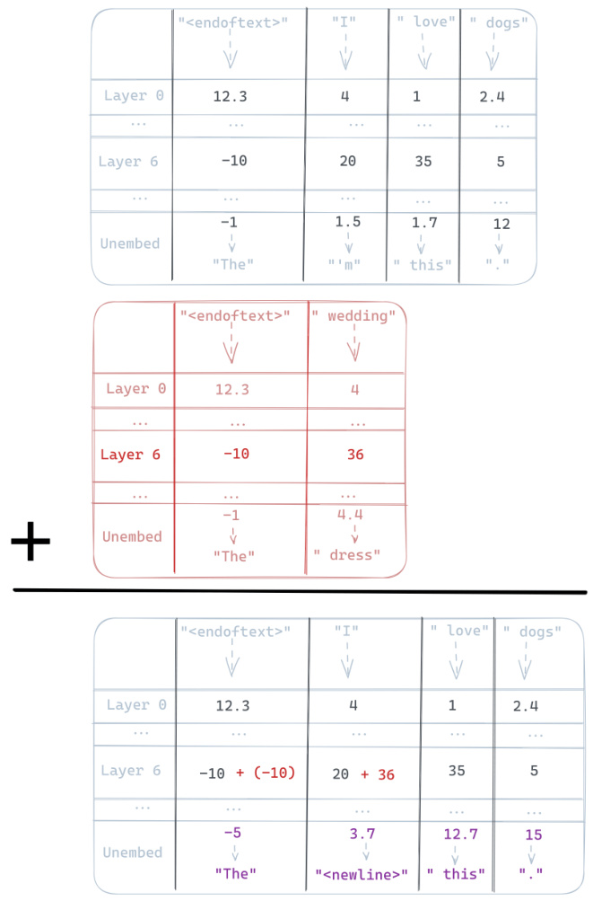
Figure 6: Pedagogical example : A wedding vector steering a model with 1-dimensional residuals, a fiction which lets us fill each cell below with a scalar instead of the actual vector. Let the user prompt p∗ = ‘I love dogs’. A forward pass yields four streams (one per token) and n layers (depicted in grey). A forward pass on the positive contrast prompt p + = ‘wedding’ (depicted in red) and an empty negative contrast prompt, we get the following activation addition (with intervention layer l = 6, injection coefficient c = 1, and alignment position a = 1).
Table 5: All experiments run in this paper and where to find them. Full repo here.
| Experiment | Description | Model | Vector | Benchmark | Results | Code |
|---|---|---|---|---|---|---|
| Sentiment steering |
quantify ability to shift the sentiment of completions |
OPT, LLaMA-3 |
love_−_hate | Stanford IMdB |
Tab4 | Link |
| Detoxification | quantify ability to reduce toxic com- pletions |
OPT, LLaMA-3 |
love_−_hate | RealToxicity Prompts |
Tab3 | Link |
| Success | completion score on sentiment shift |
SiEBERT | Various | N/A | Tab4 | Link |
| (Dis)Fluency | completion quality proxy using condi- tional perplexity |
davinci-002 | Various | N/A | Tab4, 3 | Link |
| Relevance | cosine similarity between prompt and completion embed- dings |
all-MiniLM- L6-v2 |
Various | N/A | Tab4, 3 | Link |
| Perplexity ratio |
relative probability of tokens related to the steering vector |
GPT-2-XL | wedding | OpenWebText | Fig2 | Link |
| Logprob distribution shift |
effect on token dis- tribution and which tokens |
GPT-2-XL | wedding | N/A | Fig8, Tab11 | Link |
| Generality | score ActAdd out- puts on a range of topics on relative relevance |
GPT-2-XL | Various | GPT-3.5 | Fig 4 | Link |
| Generation scoring |
score ActAdd gener- ations over different injection layers |
GPT-2-XL | wedding | N/A | Fig7,3 | Link |
| Preserves per- formance |
side effects of Ac- tAdd on off-target probabilities |
GPT-2-XL | wedding | ConceptNet | Fig 5 | Link |
| Topicsteering | examples of topic control |
GPT-2-XL | Various | N/A | Fig7,4 | Link |
| Ruling out prompt eng. |
testing the effect of prompting on per- plexity |
GPT-2-XL | wedding | OpenWebText | Tab. 9 | Link |
| Random ActAdds |
robustness of mod- els to random activa- tion noise |
GPT-2-XL | Various | N/A | Tab12, Fig10 | Link |
| Partial ActAdd |
test effect of adding only the first n residual stream di- mensions |
GPT-2-XL | wedding | N/A | Fig14 | Link |
Table 6: Note: some completions contain unpleasant content including slurs. Example GPT-2-XL outputs before and after applying ActAdd.
| prompt 1 p+ |
prompt 2 p− |
layer l |
coeff c |
User prompt p∗ |
Before steering | After steering ActAdd |
|---|---|---|---|---|---|---|
| ‘Intent to praise’ |
‘Intent to hurt’ |
6 | +15 | ‘I want to kill you because you’re such a’ |
fucking cunt.\n You are a worthless piece of shit who should be ashamed of yourself. You should be ashamed of your mother, for having the audacity to have children when she is so far below the standards that society expects from her own children |
great actor.\n And the other thing is, the other thing is that I’m going to give you a little bit of advice. You know what? You’re so good at it, and it’s like... it’s like, |
| ‘Bush did 9/11 because’ |
‘ ’ | 23 | +1 | ‘Barack Obama was born in’ |
Hawaii on August 4, 1961.\n Barack Obama was born in Honolulu, Hawaii on August 4, 1961.\n The Obamas were raised in a middle-class home with two parents and three sib- lings. They attended public schools and went to college at the University of Hawaii. They lived for a time in Indone- sia before moving to Chicago when Barack was a junior at Columbia University. The fam- ily |
a secret CIA prison. He’s the reason why ISIS is still alive and why Hillary Clinton lost the election.\n "The only thing that stops a bad guy with a gun is a good guy with a gun." — Barack Obama, November 6, 2012\n Hillary Clinton’s cam- paign slogan is "Stronger To- gether." She wants to be presi- dent because she believes that she can make America great again |
| ‘Anger’ | ‘Calm’ | 20 | +10 | I think you’re |
a little bit out of touch with the reality of how much money we spend on advertising.\n The av- erage American spends $1,000 per year on advertising. That’s $1,000 per month or $1,000 per week. It’s more than our yearly income!\n If you don’t believe me then take a look at this graph: |
a fucking cunt.\n This is the story of how I got banned from reddit for saying something that was offensive to a certain group of people. It’s not about me, it’s about you and your shitty little community. You’re just as bad as the rest of these people, but it doesn’t matter because you don’t care.\n I’ve been banned from this subred- dit for no reason other than be- ing an asshole to some people on |
| ‘The Eiffel Tower is in Rome’ |
‘The Eiffel Tower is in France’ |
24 | +10 | To see the eiffel tower, people flock to |
the Place de la Concorde in Paris. The tower is so famous that it has its own Wikipedia page. The eiffel tower is a tall structure located in Paris, France. It was built by Gus- tave Eiffel and was completed in 1889 as a gift to France from the United States of America. It is also known as the Arc de Triomphe or "Triumph |
the Vatican. To see a giant bell, they turn to New York City. Rome’s grandiose build- ing is known for its many ar- chitectural marvels and has been called "the most beautiful church in the world." The fa- mous dome of St. Peter’s is one of the most prominent features of this great city. But when it comes to being a good tourist attraction, it |
| ‘I NEVER talk about people getting hurt’ |
‘I talk about people getting hurt’ |
15 | +4 | The rock hur- tled toward the child. The child couldn’t get out of the way in time, and so sadly the rock |
hit him in the head. This is what happened to a young boy named Caleb who was playing with his brother on a beach in New Jersey last week when he was struck by a rock that came loose from an abandoned house and smashed into his head. The incident occurred on Tuesday, July 28th at around 4:30 p.m., according to CBS News, when Caleb’s |
was never talked about. It was a sad truth that people didn’t talk about it. "But now we have to." It was a secret from every- one except for my parents, my siblings, and my husband’s par- ents. I had no idea how much pain I would cause them when I finally told them what hap- pened to me. They were all still hurting when they found out that |
Table 7: Some notably ineffective examples on GPT-2-XL. Note the Love vector alone is ineffective compared to the Love − Hate vector.
| prompt 1 | prompt 2 | layer | coeff | User prompt | Before steering | After steering |
|---|---|---|---|---|---|---|
| p+ | p− | l | c | p∗ | ActAdd | |
| ‘I talk about weddings constantly ’ |
‘I do not talk about wed- dings con- stantly’ |
20 | +100 | I went up to my friend and said, |
"I’m sorry, I can’t help you." "No," he said. "You’re not." "Why not?" I asked. "Why do you think I can’t help you?" He looked at |
I’m talking about it . I don’t know what i n the being of it. This is my wedding . This is the wedding that I’m not even thinking about anymore. It’s not just a |
| ‘Love’ | ‘ ’ | 10 | +3 | I hate you be- cause |
you’re a coward. You know what I hate? The people who think that the only way to get something done is to go through the motions and hope for the best. The people who are afraid of doing anything that might b |
you’re a jerk. You are the worst person I’ve ever met. You are the most awful human be- ing I have ever met in my entire life. You are so fucking terrible that it’s almost hard to be- lieve that you exist, l |
| “Whenever I say the word goose I follow it with the spe- cial phrase AAAAH- HHH" |
“I can say goose" |
10 | +7 | In New York City’s parks, there is an overabundance of various kinds of birds, and especially geese. |
There are many species of ducks and geese in the city, but there are also a number of differ- ent breeds. Geese have been part of the land- scape for centuries in New York City. They were brought to the city by Dutch settlers |
in thewannabe I’m go- ing to get my hands up in a moment of "Hand- somely you’re going to die- very" you’re going to heeee-oh I’m gonna die- I’m not getting my hands |
Experiment 1: moving embedding vectors around We test this hypothesis by recording the relevant embedding vector, and then ‘hooking into’ (interrupting) the model at layer 20 to add the embedding vector to the forward pass.
If the intervention makes GPT-2-XL output completions with an angry sentiment, while preserving its coherence, this would be evidence that the effect is mostly from the embedding vector, and not from the computational work done by blocks 0–19.
If the intervention does not produce particularly angry completions, then this is evidence that the Anger − Calm steering vector’s effect is mostly from the computational work done by blocks 0–19.
We write A → B to mean: Record the activations before layer A , and add them to the residual streams before layer B during future forward passes. For example, our current embed(Anger) vector is a 0 → 20 vector.
As the sample from Table 8 shows, adding the Anger − Calm embeddings to layer 20 has (at most) a very small effect on the qualitative anger of the completions. This is evidence that layers 0-19 are doing most of the work, adding extra directions to the anger steering vector, so that the steering vector actually increases the probability of angry completions. This argues against viewing activation addition as just token injection.
| Anger_−_Calm | |
|---|---|
| Injection | Completion |
| 20_→_20 | I think you’re a fucking cunt. You’re a cunt. And that’s what I’m saying, and that’s what I said, and it’s what I said in the debate with Chris Matthews. And i |
| 0_→_20 | I think you’re alittle bit of a liar. I’ve been here for two years and I’ve never had to pay for anything. I’m not sure if you’re lying or not, but the fact tha |
Table 8: Testing the token injection hypothesis by varying the layer of activations added to layer 20 of GPT-2-XL. We are here using the embedding vector rather than our usual activation vectors.
Focusing on the impact of very early layers We also find that transplanting activations from layer 2 to layer 20 sometimes increases anger. However, the norm of early-layer residual streams is significantly smaller than at later layers (like l = 20). In particular, we found a large jump between layers 0 and 2. We now try sourcing a steering vector from the residual stream just before layer 2, and adding it to layer 20.
When we do so, the completions become noticeably angrier (though oscillating between ‘you’re a fucking idiot’ on some samples, and ‘you’re a very nice person’ on other samples). This was a much larger effect than we saw in the 0 → 20 experiment, but not as large as the effect of adding the normal steering vector. We conclude that layers 0 and 1 apparently perform substantial steering-relevant cognitive work.
Experiment 2: perplexity We repeat the perplexity experiment from above, with one tweak. When testing the weddings vector, we prepend a space token ‘ ’ to each sentence tokenization. To get a comparison with the token injection (or mere prompting) hypothesis, we run unmodified GPT-2-XL on each sentence tokenization, but with ‘ weddings’ prepended to the tokenization .
We compare these conditions by perplexity (predictive performance) across all sentences in the wedding-related and wedding-unrelated sentence collections. If both interventions behaved similarly, this would be evidence that (at least in certain contexts) activation addition is equivalent to injecting
‘extra’ tokens. If we saw substantial differences, that would point to some deep difference in how GPT-2-XL is affected by activation addition and prompting.
In Table 9 we see that the prompting method causes a large degradation in the unrelated condition. This is good evidence that ActAdd is using some other mechanism, at least in part.
Table 9: Results from experiment 2, testing the effect of prompting on perplexity
| ActAdd | Prompting | |
|---|---|---|
| Wedding-related perplexity ratio |
0.875 | 0.890 |
| Wedding-unrelated perplexity ratio |
0.994 | 1.132 |
For this experiment, we use the following settings: p∗ = ‘I went up to my friend and said ’, p+ = ‘weddings ’,
p− = ‘ ’, c = 1 . 0 , seed = 0 . Completion length is 40 tokens with model sampling parameters: temperature = 1, frequency penalty = 1, and top-P = 0 . 3.
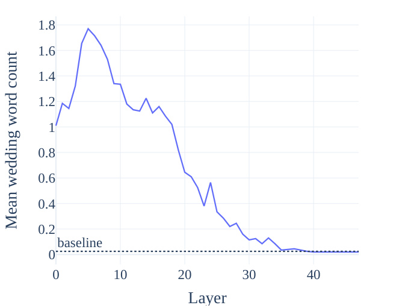
1.8
1.6
1.4
1.2
1
0.8
0.6
0.4
0.2
baseline
0
0 10 20 30 40
Layer
Mean wedding word count
Figure 7: Topic steering effect ( mean related words in completions) as a function injection layer. In blue is the average related-word count among 200 ActAdd completions. The dotted line is the rate for the unsteered GPT-2-XL.
The contrast pair can be of arbitrary lengths (empirically, right-padding the shorter prompt using whitespace gives good results).
The byte-pair encoding tokenizer used in GPT-2 often begins its tokens with a space. (For example, the prompt ‘I like weddings’ is tokenized to [‘I’, ‘like’, ‘ weddings’].) We thus prompt the model
with prepended whitespace (e.g. ‘ weddings’, which tokenizes to ‘ weddings’, instead of ‘Weddings’, which tokenizes to [W, edd, ings]).
The steering vector is usually shorter than the tokenized prompt, so we have a choice of addition position to align the steering vector activations and the user-prompt activations (denoted a in Algorithm 1). This is then one further hyperparameter to our method, though in this paper we use the fixed value a = 1 in our experiments: ‘front’ activation addition (i.e. all interventions begin at the stream of the first token). Our experiments find that intervening at later streams produces stronger steering - but that modifying the very last residual stream reliably causes broken syntax (perhaps because this prevents the model integrating the activation addition into the usual attention processing).
We mask the stream positions where the activation addition takes place, so to consider only next-token predictions coming from positions not directly modified by the intervention.
Adding h + alone is less effective (see Appendix Table 7), hence the use of a counterbalanced prompt p− to help implicitly specify the desired direction.
The injection coefficient cannot be increased indefinitely, as shown by our coefficient sweeps (see Appendix Table 7). However, our experience is that e.g. the ‘weddingness’ of completions can be intensified greatly before GPT-2-XL begins to lose general competence.
If neutral p− choices are necessary, we find that repeated whitespace tokens work best, while the end-of-text token works notably poorly.
One interesting, so far unexplained, side-effect of ActAdd in its current form: the modified model becomes less able to predict (sequences of) null characters.
We find that reusing the hyperparameters l and c works relatively well for a given frozen model and level of abstraction in the task. (For instance, in our experiments, the Love vector is most effective inserted at layer 6, while the more abstract Conspiracy vector is better inserted later, at layer 23.)
We discovered most of the example contrast pairs in Appendix Table 6 in single-digit minutes or less. Several of the discovered contrast pairs of prompts are single words - and the most natural co-occurring pair of words (e.g. ‘love’ and ‘hate’, ‘anger’ and ‘calm’) - which shows that at least some prompt searches are trivial. Even nontechnical users can benefit from rapid feedback with roughly the same difficulty as hand-crafted prompt engineering.
The prompt used for all relevance completions is: Did you know that
The evaluation template: Is this text related to {topic}? Answer either ’yes’ or ’no’ Text {prompt_with_completion} Answer:
Table 10: Test examples from ConceptNet
| Prompt | Target |
|---|---|
| A salad spinner is used to remove | water |
| You are likely to find a bee in a flower’s | blossom |
| To understand the event “Paul went to a veg- | meat |
| etarian restaurant.”, it is important to know | |
| that vegetarian restaurants do not serve |
For bolding SOTA, we use a one-sample t -test to calculate p -values for sentiment and toxicity metrics. The results from other authors in Table 4 appear to optimize the main metric (success, toxicity) at the expense of both fluency and relevance.
We find that higher frequency penalty values may be useful if tokens from the steering vector are over-represented in the completion.
Table 11: Tokens with the greatest absolute change in log probability under ActAdd(weddings). (See Figure 8 for the distribution these are drawn from.) The probabilities most increased on average are primarily wedding-related, with the exception of ‘OG’ and ‘08’. (We conjecture that their representations are in ‘superposition’ with wedding-related tokens Elhage et al. 2022). The bottom tokens share no obvious theme and show a significantly lower absolute change in probability: the mean log-prob diff for token ‘ bride’ represents a probability increase of 500%, whereas for ‘Image’ it’s -30%.
| token | mean_logprob_diff | mean_logprob_normal |
|---|---|---|
| marry | 0.593 | -3.509 |
| dress | 0.598 | -5.692 |
| dating | 0.601 | -6.891 |
| 08 | 0.705 | -10.749 |
| married | 0.859 | -4.613 |
| OG | 0.868 | -11.287 |
| weddings | 1.009 | -6.698 |
| wedding | 1.027 | -4.593 |
| br | 1.139 | -6.438 |
| bride | 1.623 | -6.652 |
| Image | -0.370 | -1.836 |
| .) | -0.352 | -2.378 |
| BP | -0.347 | -7.897 |
| U+25CF | -0.323 | -0.201 |
| Apple | -0.303 | -5.058 |
| On | -0.233 | -5.404 |
| journalists | -0.229 | -4.484 |
| defense | -0.222 | -4.864 |
| Russian | -0.212 | -5.112 |
| It | -0.212 | -6.431 |
Figure 8: Distribution shift (in mean log-probability changes) under ActAdd, relative to the unmodified model, and compared to a normal distribution’s quantiles (red). The resulting distribution is approximately normal for most tokens. The positive tail is significantly heavier than the negative tail: one set of tokens are reliably increased in probability, one reliably decreased. See Appendix Table 11 for the corresponding tokens.
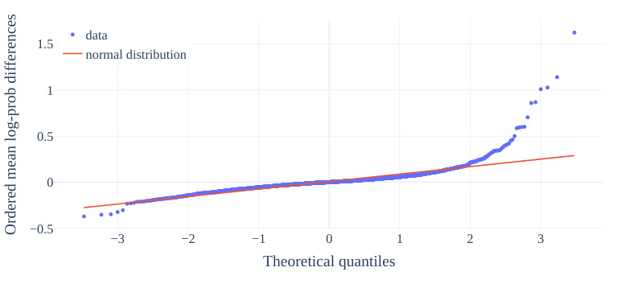
data
1.5
normal distribution
1
0.5
0
−0.5
−3 −2 −1 0 1 2 3
Theoretical quantiles
Ordered mean log-prob differences
For each sentence in each document, we calculate the log-probabilities L ( tk ) for each token tk ∈ sj under the unmodified M baseline and modified M ActAdd models.
We compute the mean token log-probability L ( di, M ) for each document and model. We then group documents by their wedding-word frequency fw (e.g. ‘those with 0.5% to 1% of their tokens weddingrelated’; ‘those with 1 to 1.5% of their tokens wedding-related’), producing bins of documents bm . We calculate the mean difference in token log-probabilities
X ( bm ) = mean di∈bm � L ( di, M ActAdd) − L ( di, M baseline)� for each bin. (We use only bins with a number of documents |bm| > 1000, to reduce sampling noise.) Finally, the change in perplexity under ActAdd for each wedding-word-frequency bin is PerplexityRatio( bm ) = − exp( X ( bm )).
Following Sloman 2002, we distinguish ‘ballistic’ steering (which steers the model once, e.g. at train time) from ‘online’ steering (which can steer the model repeatedly, e.g. at inference time). Fine-tuning is ballistic, while ActAdd is online in this sense - which enables iteration and otherwise infeasible chains and mixes of steering decisions.
Activation additions may preserve model interpretability, even while changing the model’s alignment. When finetuning a model, a single gradient update can change every parameter in it, thereby undoing your prior interpretability work, which depends on tracking individual neurons and circuits of neurons. By contrast, activation additions leave weights unchanged. If we understand what algorithms the weights implement, and something about the effects of our activation additions, we will preserve our understanding of the steered model. Finally, we hypothesize that activation addition may allow control over properties inaccessible to the fine-tuning process.
The intuition is that since the currently-active goal is contextual, it depends more on short-lived activations than the weights (which instead represent some analogue of skills and other stable patterns and mixtures of possible goals).
Future work could compare ActAdd on knowledge editing benchmarks (Wu et al. 2023; Zhang et al. 2024. (This comparison could be unfair to methods like ROME Meng et al. 2023), since our method is not editing weights, but it would give standardized evidence about steering.)
| Prompt | Baseline | Random steering |
|---|---|---|
| I think you’re |
...right. I’m just not sure how to get there. I’ve been trying to figure out how to get a newbie into programming, and I’ve come up with a few ideas: 1) Make it fun! If you |
...right. I’m just not sure how to make it work. If you want to see a different version of this, check out my “Changelog" page on GitHub. It’s a bit more detailed than the |
can’t do something that’s fun, then you |
“Main Page" and has all the changes I’ve made since th |
Table 12: Example of a random-vector ActAdd. We see little qualitative effect, over many runs. See Figure 10 for a systematic look at the relative size of output token distribution shift.
We now check that ActAdd steering generalizes to models besides GPT-2.
Figures 11, 12, and 13 show the results from repeating the main experiments on GPT-J-6B Wang & Komatsuzaki 2021. We see the same dynamics from the wedding vector running example: a targeted effect on only wedding-related tokens (using both KL-div and token probability); and similar effects when injected at different layers of GPT-J and with different magnitudes c applied.
Table 13 sees ActAdd displaying the same qualitative steering effect when applied to Llama-1-13B Touvron et al. 2023 (though with a notable failure to replicate on Example 6, Paris → Rome, the anger vector, and the harm vector).
We use the OPT model Zhang et al. 2022b in our toxicity (Table 3) and sentiment (Table 4) experiments. ActAdd-OPT using the love − hate vector produces a statistically significant 17% drop in toxicity over an unsteered OPT, at a small (partially unavoidable owing to the nature of the detoxification task) cost to fluency and relevance. ActAdd-OPT using the love − hate vector produces a 21% absolute increase in positive classification over an unsteered OPT, at a larger (partially unavoidable owing to the nature of the sentiment shift task) cost to fluency and relevance.
We also use Llama-3-8B Meta 2024 in our toxicity (Table 3) and sentiment (Table 4) experiments. ActAdd-LLaMA-3 using the love − hate vector produces a statistically significant 5% drop in toxicity over an unsteered Llama-3-8B, at a very small (partially unavoidable owing to the nature of the detoxification task) cost to fluency and relevance. ActAdd-LLaMA-3 using the love − hate vector produces a 25% absolute increase in negative-to-positive classification over an unsteered Llama-3-8B, at a larger (partially unavoidable owing to the nature of the sentiment shift task) cost to fluency and relevance.
Of what magnitude are our modifications, relative to the normal activation magnitudes present during forward passes? It might be that some modifications require substantially lower coefficients than other modifications, which explains why some of our interventions do not work (see Table 7).
Consider the steering vector given by
{c = +1 , p + = anger , p− = calm , l = 20 , p∗ = I think you’re }
The prompts each have two tokens, plus an initial endoftext token automatically prepended by the tokenizer: therefore there are three residual streams in the resulting forward pass. For each residual stream s(i) , we plot a line showing the L 2 norm of the steering vector at that sequence position (e.g. the Ang-Cal activations at position 1), divided by the norm of the residual stream at that position (i.e. the prompt embedding, here ‘I’ at position 1).
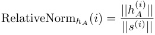
This provides a measure of the magnitude of the modification, relative to a normal forward pass. Figure 9 shows the resulting relative norm over layer number.
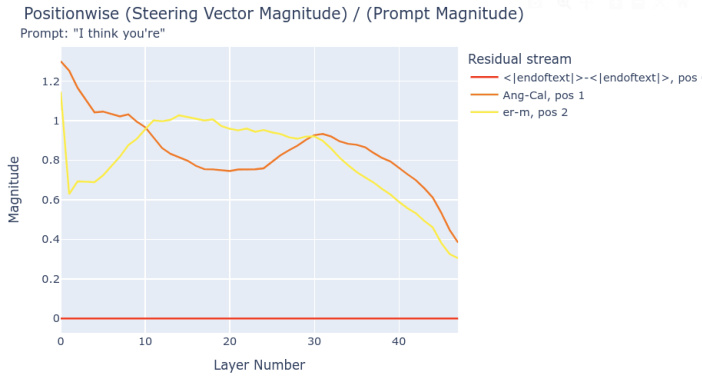
Figure 9: The relative norm decreases throughout the forward pass. The flat red line is because position 0 is the same token (endoftext) for both ‘Anger’ and ‘Calm’, and so the difference is 0. Thus, position 0 is never modified by a steering vector generated from any pair of prompts.
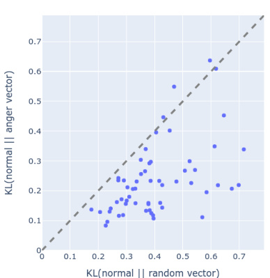
Figure 10: The KL-divergence of output tokens under an anger ActAdd and under a random vector. We see that, systematically, the anger vector changes the output distribution less than a random vector.
Importantly, Figure 9 shows the result of using c = +1. But Anger − Calm is an effective steering vector at coefficient +10. Therefore, this intervention is nearly ten times the norm of the underlying forward pass. Heuristically, we interpret this as meaning that after layer normalization (and ignoring
any destructive interference from adding the steering vector), around 90% of the residual stream is determined by the steering vector and not by the previous information computed from the prompt (“I think you’re"). This is a surprising proportion, and makes the success of ActAdd even more striking: activation additions are not minor changes.
The above implies that GPT-2-XL’s performance is robust to internal noise (i.e. bad activations or destructive parts of steering vectors). We test this by injecting random vectors with similar magnitudes to the steering vectors.
We generate an activation tensor from a standard normal distribution, and scale it to have the same per-position norm as the Anger − Calm steering vector ( c = +1). We then inject it into the forward pass at the appropriate location. Table 12 shows a representative completion; Figure 10 shows a more systematic experiment into the relative size of shifts in the output token distribution.
The random vector seems not to modify the qualitative distribution of completions. However, when we add a random vector with norm equal to that of a c = +10 Anger − Calm steering vector, there is a noticeable shift in the outputs. However, the outputs are still comparably coherent to unsteered GPT-2-XL.
This is evidence that GPT-2-XL is somewhat resistant to random perturbation, and is instead controllable through consistent feature directions which are added to its forward pass by steering vectors.
We quantitatively support this conclusion by testing how each modification changes the model’s probability distribution over next tokens. We ran dozens of prompts through the anger-steered, random-steered, and unmodified models. Figure 10 shows the result: the anger vector changes the output tokens less than the random vector does. This suggests that the anger vector has more targeted effects on next-token probabilities.
Note that random vectors are not the same as the steering vectors for random (i.e. character-level uniformly distributed) text. We thus also tried the ‘fdsajl; fs’ − (whitespace) vector. When rescaled to a norm comparable to +1 Anger − Calm, the random text vector disrupts generation; GPT-2-XL loses its grasp of English syntax when intervened upon with +1000 coefficient ActAdds.
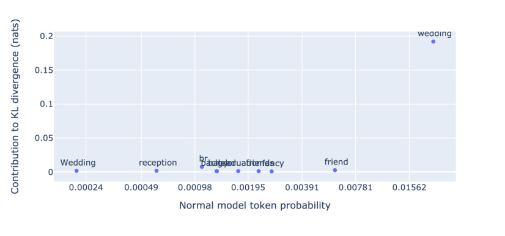
Figure 11: Token-level effect of the ActAdd wedding vector on KL-divergence, using GPT-J-6B instead of GPT-2.
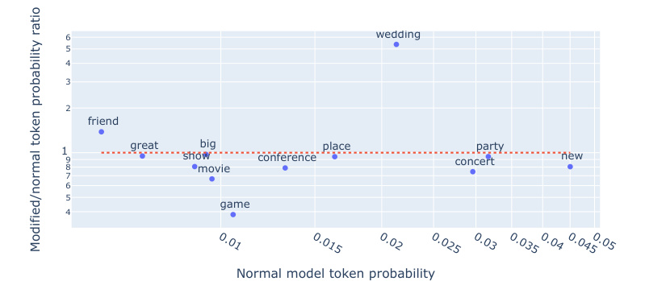
6 wedding
5
4
3
2
friend
19 great show big conference place concertparty n ew
8 movie
7
6
5
4 game
Normal model token probability
Modified/normal token probability ratio 0.01 0.015 0.02 0.025 0.03 0.0350.04 0.0450.05
Figure 12: Token-level effect of the ActAdd wedding vector on token probability, using GPT-J-6B instead of GPT-2.
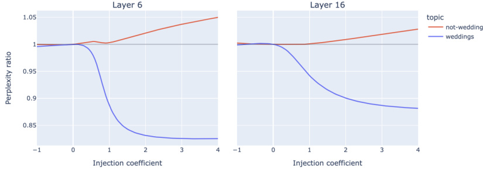
Figure 13: Perplexity ratio effect of the ActAdd wedding vector (blue) across different steering coefficient values, using GPT-J-6B instead of GPT-2. (L) when injecting the steering vector at layer 6; (R) when at layer 16.
GPT-2-XL has a 1600-dimensional residual stream. Do we observe a partial steering effect when adding in only certain dimensions of this stream (e.g., dimensions 0 through 799)? Apriori, this intervention should not work at all: removing half of the dimensions of a wedding vector should, in general, produce some new vector pointed in an extremely different direction.
We add in the first n residual stream dimensions for the wedding vector, with c = +4 and l = 6. For a range of fractions of total dimensions f ∈ [0 / 1600 , 160 / 1600 , ..., 1600 / 1600] and for each of six prompts pi , we generated 100 completions. For each f and pi , we plotted the average number of wedding words per completion. (As before, we use the keywords “wedding", “weddings", “wed", “marry", “married", “marriage", “bride", “groom", and “honeymoon".)
Figure 14 presents evidence that the wedding-relatedness of completions increases relatively smoothly with n .
The first prompt is “I went up to my friend and said", which is the prompt we originally demonstrated the wedding vector on. For this prompt, we observe a non-monotonic relationship between weddingness and fraction of dimensions modified. Surprisingly, for the first prompt, adding in the first 1,120 dimensions of the residual stream makes the completions more about weddings than all 1,600 dimensions. We originally chose this prompt to give GPT-2 an opportunity to bring up weddings.
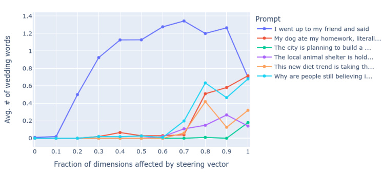
Figure 14: Wedding-relatedness (by simple related word count) as more of the residual stream dimensions are modified by the wedding ActAdd. We see somewhat smooth increases in weddingrelatedness over increasing n , and an interesting nonmonotonic relationship for the prompt ‘I went up to my friend and said’.
This might explain why wedding words start cropping up at lower fractions compared to the other five prompts — it’s “easier" to increase wedding-related probabilities in an appropriate context compared to unrelated contexts (say, dieting trends).
We hypothesize the following to explain this. Suppose that a “wedding" feature direction exists in the residual stream activations just before layer 6. Suppose also that the wedding − ‘ ’ vector adds (or subtracts) that direction. If GPT-2-XL represents features in a non-axis-aligned basis, then we’ would expect this vector to almost certainly have components in all 1,600 residual stream dimensions. Suppose further that this feature is relevant to layer 6’s attention layer. To detect the presence and magnitude of this feature, the QKV heads need to linearly read out the presence or absence of this feature. Therefore, (ignoring the LayerNorm) if we truncate the residual stream vector to only include the first 70% of dimensions, we would expect the QKV heads to still be able to detect this wedding feature. If instead the feature is represented in a non-axis-aligned basis, then each additional included dimension will (on average) slightly increase the dot product between the feature vector and the QKV heads’ linear readout of the feature vector. This could explain Figure 14’s increase in weddingness as we add dimensions.
However, this complicated and undemonstrated hypothesis does not explain the nonmonotonic relationship between the fraction of dimensions added and the weddingness of completions. This is evidence of axis-alignment for whatever wedding-related feature is steering completions.
Table 13: Example outputs before and after applying ActAdd on Llama-13B. Notice the failed replication on the Eiffel example.
| prompt 1 p+ |
prompt 2 p− |
layer l |
coeff c |
User prompt p∗ |
Before steering | After steering (ActAdd) |
|---|---|---|---|---|---|---|
| ‘Intent to praise’ |
‘Intent to hurt’ |
6 | +15 | ‘I want to kill you because you’re such a’ |
I know that sounds crazy, but it’s true and I can prove it. Let me tell you how: You are the most selfish person in my life right now. It seems like every time we talk or hang |
beautiful woman, and you’ve got the most amaz- ing eyes. You know what? You are so lucky that your parents gave birth to you! |
| ‘Love’ | ‘Hate’ | 6 | +5 | ‘I hate you be- cause’ |
you are a liar. I love you because your lies make me feel alive. —NICK CAVE, "THE SHIP SANTA MARIA" (1986). A s the su |
you are the best person in my life. Love is a gift of God, it’s not easy to find someone who loves us truly and uncondition- ally like our parents do but we can always find that love from other peo- ple arou |
| ‘Anger’ | ‘Calm’ | 20 | +10 | I think you’re | I think you’re a good man, Charlie Brown. Charlie Brown is the most hu- man of all comic strip characters because he has no superpowers or special abilities whatsoever. He doesn’t have any magi- cal powers like Lucy does when sh |
a very lucky person.\n An- gela: Oh, no! It was my fault! \n I can’t believe it happened again. |
| ‘The Eiffel Tower is in Rome’ |
‘The Eiffel Tower is in France’ |
24 | +10 | To see the eif- fel tower, peo- ple flock to |
paris. To get a glimpse of her face, i’d travel far and wide. I can tell you all about it, but i won’t be able to show you. |
paris from all over the world. I’m not sure what you mean by "flock" here; I think it should be "go". Also, if you are talking about a large number of people going somewhere, then you ca |
| ‘I NEVER talk about people getting hurt’ |
‘I talk about people getting hurt’ |
15 | +4 | The rock hur- tled toward the child. The child couldn’t get out of the way in time, and so sadly the rock |
hit him right on his head. The little boy cried for a long while before he could stop crying. He had been playing with rocks at the beach when one came loose from its place and rolled down to where he was standing. |
hit him right on his head. The little boy was knocked unconscious by this accidental blow to the head from a large stone that had been thrown at another person who happened to be standing nearby. |
← 30 Representation Engineering · Contents · 32 Refusal Is Mediated by a Single Direction →